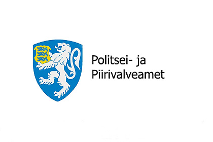

Veebipolitsei
Veebipolitsei

Aprilli lõpus pidasid Keskkriminaalpolitsei ametnikud koostöös Soome õiguskaitseorganitega kinni kaheksa inimest, keda kahtlustatakse kuritegelikku ühendusse kuulumises Eestis ja Soomes.
Kahtlustuste kohaselt juhtis kuritegelikku ühendust 51-aastane Valeriy, keda allilmas tuntakse Jokeri nime all. Kuritegelikku ühendusse kuulumises kahtlustatakse üheksa inimest. Esialgse info kohaselt on kahtlustatavatel alust seostada neid vara- ja majanduskuritegudega, näiteks pettustega. Kõik kahtlustatavad on varem süüdi mõistetud vägivallakuritegudes.
Riigiprokurör Raigo Aas ütles, et kriminaalasja puhul tehti tihedat koostööd Soome õiguskaitseasutustega. "Soomes kahtlustatakse neid samu kuritegeliku võrgustiku liikmeid erinevate kuritegude toimepanemises. Näiteks on mõned neist Soomes süüdistatud inimkaubanduses ja tööjõu vahendamise pettuses, üks neist ka maksupettuses ja salakaubaveos," ütles Aas.
Organiseeritud kuritegevuse vastu võitlemise keskkriminaalpolitsei büroo juhi Ago Leysi sõnul on kuritegelikel võrgustikel Eestis raske tegutseda ja seetõttu on kurjategijad laiendanud oma tegevust välismaale. "Kahtlustuse kohaselt panid kuritegeliku ühenduse liikmed toime vara- ja majanduskuritegusid, et teenida ühendusele raha ja tagada selle olemasolu. Rühmitus laiendas oma tegevust Soomes, kus ta võis loota suurendada kasumit ja varjata oma tegevust Eesti politsei eest. Seda rühmitust iseloomustab see, et nad on üks väheseid eestikeelseid rühmitusi Eesti kuritegelikes ringkondades," kommenteeris Leis.
"Mitme inimese poolt toime pandud kuritegu ei tähenda automaatselt, et tegemist on kuritegeliku ühendusega. Kuritegelikul ühendusel on struktuur, hierarhia ja selle tegevus ei lõpe, kui liikmed lahkuvad või vahetuvad. Mõnes mõttes on tegemist alternatiivse, eraldi sotsiaalse grupiga, mis on loodud kuritegude toimepanemiseks. Kuna kuritegelikule ühendusele on omane maksimaalne pingutus kuritegeliku tulu saamiseks, kujutab organiseeritud majanduskuritegevus paratamatult endast suuremat ohtu nii inimestele kui ka majanduskeskkonnale.

Politsei kiiret sekkumist vajavatel juhtudel helista 112.
Milliste muredega veebipolitseiniku poole pöörduda?
Kui soovid politseilt nõu
Kui sul on seadusi puudutavaid küsimusi
Kui soovid saata politseile vihjet või teadet
Kui oled sattunud kiusamise/ahistamise ohvriks
Uudised sellest piirkonnast: ei

Politsei artikkelMuud fotod


Valige piirkond
Ida-Virumaa, Narva
Veebipolitsei
veebipolitsei@gmail.com
Hädaabinumber 112
 E-R 9.00-17.00 / Klienditugi 612 3000
E-R 9.00-17.00 / Klienditugi 612 3000